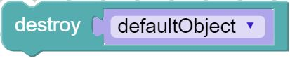
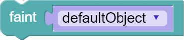
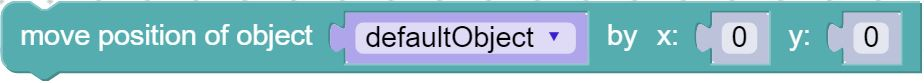
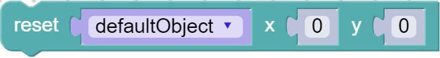
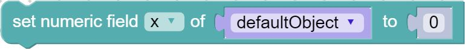
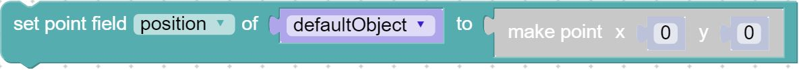

- Source:
Methods
-
<static> camera_follow_vi(object)
-
Makes the game camera follow the object. Check out Phaser documentation for a more in depth explanation.Parameters:
Name Type Description objectobject for the camera to follow
- Source:
Returns:
game.camera.follow(object); -
<static> camera_follow_vi_complex(object, lerpX, lerpY, style)
-
Makes the game camera follow the object, with a specific style of following. Lerp designates how much linear interpolation to use when horizontally tracking the object. The closer the values is to 1, the faster the camera will track. Check out Phaser documentation for a more in depth explanation.Parameters:
Name Type Description objectobject for the camera to follow
lerpXNumber linear interpolation in the x direction
lerpYNumber linear interpolation in the y direction
stylethe style of the camera following
- Source:
Returns:
game.camera.follow(object, style, lerpX, lerpY); -
<static> camera_follow_vi_styled(object, style)
-
Makes the game camera follow the object, with a specific style of following. Check out Phaser documentation for a more in depth explanation.Parameters:
Name Type Description objectobject for the camera to follow
stylethe style of the camera following
- Source:
Returns:
game.camera.follow(object, Phaser.Camera.style); -
<static> destroy_object(object)
-

Deletes everything about the game object. Check out Phaser documentation for a more in depth explanation.Parameters:
Name Type Description objectobject to destroy
- Source:
Returns:
object.destroy(); -
<static> faint_object(object)
-

Sets the values of game object alive, exists, and visible to false. Does not actually destroy the object or free it from memory. Check out Phaser documentation for a more in depth explanation.Parameters:
Name Type Description objectobject to faint
- Source:
Returns:
object.faint(); -
<static> get_game_object_boolean_field(object, field)
-
Returns the chosen boolean field value for the game object. Check out Phaser documentation for a more in depth explanation.Parameters:
Name Type Description objectobject to get values from
fieldthe field to get the value of
- Source:
Returns:
object.field -
<static> get_game_object_numeric_field(object, field)
-
Returns the chosen point numeric value for the game object. Check out Phaser documentation for a more in depth explanation.Parameters:
Name Type Description objectobject to get the values from
fieldthe field to get the value of
- Source:
Returns:
object.field -
<static> get_physics_point_field(object, field)
-

Returns the chosen point field value of the game object. Check out Phaser documentation for a more in depth explanation.Parameters:
Name Type Description objectobject to get values from
fieldthe field to get the value of
- Source:
Returns:
object.field -
<static> move_by(object, x, y)
-

Move the position of the object by the given amount, relative to the object's current position. Check out Phaser documentation for a more in depth explanation.Parameters:
Name Type Description objectobject to move
xNumber number of pixels in the x direction to move
yNumber number of pixels in the y direction to move
- Source:
Returns:
object.position.add(x, y); -
<static> reset(object, x, y)
-

Moves the game object to the given coordinates, and sets properties fresh, exists, visible, and renderable to true. Check out Phaser documentation for a more in depth explanation.Parameters:
Name Type Description objectobject to reset
xNumber x position to move the object to
yNumber y position to move the object to
- Source:
Returns:
object.reset(x, y); -
<static> revive(object)
-
Brings a fainted object back to "life". Sets alive, exists, and visible to true. Check out Phaser documentation for a more in depth explanation.Parameters:
Name Type Description objectobject to revive
- Source:
Returns:
object.revive(); -
<static> rotate(object, value_angle)
-
Rotates the object by the number of degrees. 0 to 180 rotates clockwise, 0 to -180 rotates counterclockwise. Check out Phaser documentation for a more in depth explanation.Parameters:
Name Type Description objectobject to rotate
value_angleNumber number of degrees to rotate by
- Source:
Returns:
object.angle += value_angle; -
<static> set_game_object_boolean_field_vi(object, field, value)
-
Assigns the chosen boolean field for the game object. Check out Phaser documentation for a more in depth explanation.Parameters:
Name Type Description objectobject to set the field for
fieldthe field to set
valuevalue to set the field to
- Source:
Returns:
object.field = value; -
<static> set_game_object_numeric_field(object, field, value)
-

Assigns the chosen numeric value for the game object. Check out Phaser documentation for a more in depth explanation.Parameters:
Name Type Description objectobject to set the field for
fieldthe field to set
valuevalue to set the field to
- Source:
Returns:
object.field = value; -
<static> set_game_object_point_field(field, point, object)
-

Assigns the chosen point field for the game object. Check out Phaser documentation for a more in depth explanation.Parameters:
Name Type Description fieldthe field to set
pointpoint to set the field to
objectobject to set the field for
- Source:
Returns:
object.field.copyFrom(point);